わたしたちのことAbout
医療で繋がる縁を大切に。
長く付き合っていく病だからこそ、患者さん一人一人との縁を大切にして治療を続けていきたいと願っています。
リウマチ専門医による確かな医療を気軽に、快適に受けていただきたい。
専門クリニックではありますが、「お待たせしない」ことを追求しました。待合室はありません。
完全予約制なので、来院してすぐ診察室へお入りいただけます。
より快適に過ごしていただくために、当院では医療コンシェルジュが患者さんを
受付からお会計までサポートいたします。
リウマチは女性に多い病気です。当院は内科診療やアンチエイジングのご相談も含め、
女性のライフスタイルを支えるクリニックとして開院しました。
なにか気になる症状がある方は、虹の七色で彩られた心地よい診察室へ気軽にいらしてください。
院長ごあいさつGreeting
説明は「わかりやすく丁寧に」を心がけています。
大学病院では重症・難病の治療、新規治療法の研究、学生や医師の教育などを行ってきました。研究や教育もやりがいはありましたが、多くの患者さんと関わり、患者さんから感謝の言葉をいただくことで、専門医として努力してきたことが報われた気がし、何より医者になって本当に良かったと実感できました。
女性に多く、長期的な治療が大切なリウマチ。ですが、病院では待ち時間ばかりが長く、診察はすぐ終わってしまうということも珍しくありません。女性の方に快適に、専門クリニックでもお待たせしない診療を目指し、過去に前例のないユニークなクリニックを開院しました。
専門医による最新の治療を、患者さん一人一人に寄り添って提供していきたいと考えております。
あなたに寄り添い、共にリウマチに向き合う医療を。
院長山田 一郎
はじめての方へBeginner's Guide
もしかして、リウマチ？
どんな病気なんだろう？
初めて症状に気づいた方も、既に治療を受けられている方も、リウマチ専門医が分かりやすく丁寧に診察します。
気になることを相談しながら、あなたにあった治療を考えていきましょう。
リウマチにはいい薬ができ、「寛解」という痛みがない状態に多くの方を導くことが可能な時代になりました。
費用のこと、極力ステロイドを使わないこと、新薬の話まで、納得のいくまで説明します。
リウマチに共に向き合い、あなたに寄り添う医療を目指します。
あてはまるものはありますか？
セルフチェックしてみる
- 朝にこわばりがある
- ふしぶしが痛い
- 手足が腫れぼったい
- 熱っぽい、微熱がある
- 疲れやすくなった
- 関節が3か所以上痛い
- 腱鞘炎が続く
- 歩くと足の裏が痛い
- 皮膚に異変が出てきた
- 手足の変形がある
- 家事がしづらくなった
- 携帯をしづらくなった
- 痛みで雪かきができなくなった
- 血縁者にリウマチの方がいる
これらの症状が1週間続けば疑いがあります。朝に強いことが多いですが、人それぞれです。
最初は断続的に続くなど、波があることもあります。手の症状でお気づきになる方が多いですが、足の指の付け根などにもリウマチは出ます。
例えば右肘だけなど、一つの関節だけでも可能性は考えられます。
気になる症状があったら初診のご予約をおすすめいたします。
閉じる
診察の流れFlow
- 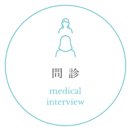
完全予約制、当日予約もお受けします。スマホでネット予約が便利ですが、お電話もOK。受付後はまっすぐ診察室へ。
-
コンシェルジュが丁寧に問診をします。気になる症状についてお伝え下さい。
- 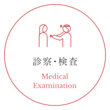
先生が丁寧に関節を診察し、超音波検査や血液検査、注射も診察室でおこなえます。納得のいくまで治療方針を相談しましょう。
- 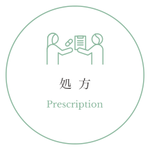
治療方針が決定したら、院内処方を診察室でお受け取りください（※内服7剤以上は院外処方となります）。次回予約をしてお会計となります。
診療内容についてMedical Service
- リウマチ科
- 内科
- アンチエンジング
-
Medical Service
リウマチ科
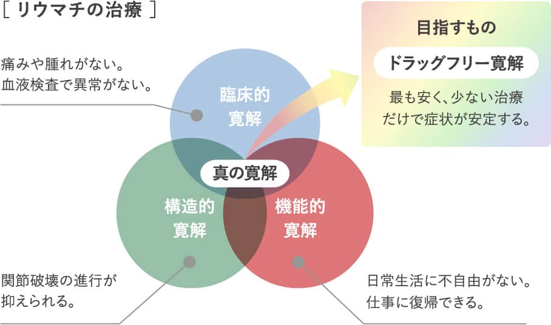関節リウマチは、30代～50代で発症することが多い病気です。患者さんは女性の比率が高く、早期発見で治療を始めることが大切。
詳しく見る
現在では良い薬があり、多くの方を「寛解」という痛みのない状態へ導くことが可能です。もしかして、と思われた時に受診してみることをおすすめします。 -
Medical Service
内科
風邪やインフルエンザ、痛風、血圧が高いなど、なんでもお気軽にご相談下さい。仕事の休憩の時間に定期薬の継続で通院したい、出勤前に病院の風邪薬が欲しい。そんな時にも時間が読める内科診療を目指します。
詳しく見る -
Medical Service
アンチエイジング
プラセンタ、ニンニク注射などを取り扱っております。健やかに美しく、リウマチと生きる女性のトータルサポートを目指します。もちろん、アンチエイジングのみの方も大歓迎です。尚、アンチエイジングは自費診療となります。※お支払いには現金のほか、各種クレジットカード(VISA/ MasterCard/ /Diners/ AMEX/ JCB)もご利用いただけます。
詳しく見る
-
- リウマチ科
- アンチエイジング
「関節リウマチ除外後の関節痛に対するアグリコン型イソフラボン (へバスター) の効果の検討」日本リウマチ学会（2021）で院長が発表
院長が2021年4/26に行われる第65回日本…
-
- リウマチ科
関節リウマチと更年期関節痛の鑑別と対策 情報誌に院長の記事が掲載
情報誌 調剤と情報（2021年1月1日発行）に、院長の記事が…
-
- リウマチ科
- アンチエイジング
「更年期関節痛に対するエクオールの効果」日本リウマチ学会（2020）で院長が発表
院長が日本リウマチ学会に下記内容で発表いたします。本来4月に…
-
- リウマチ科
- アンチエイジング
「関節リウマチ除外後の関節痛に対するアグリコン型イソフラボン (へバスター) の効果の検討」日本リウマチ学会（2021）で院長が発表
-
- リウマチ科
- アンチエイジング
「関節リウマチ除外後の関節痛に対するアグリコン型イソフラボン (へバスター) の効果の検討」日本リウマチ学会（2021）で院長が発表
-
- リウマチ科
- アンチエイジング
「関節リウマチ除外後の関節痛に対するアグリコン型イソフラボン (へバスター) の効果の検討」日本リウマチ学会（2021）で院長が発表
-
- リウマチ科
- アンチエイジング
「関節リウマチ除外後の関節痛に対するアグリコン型イソフラボン (へバスター) の効果の検討」日本リウマチ学会（2021）で院長が発表
-
- リウマチ科
- アンチエイジング
「関節リウマチ除外後の関節痛に対するアグリコン型イソフラボン (へバスター) の効果の検討」日本リウマチ学会（2021）で院長が発表
-
- リウマチ科
- アンチエイジング
「関節リウマチ除外後の関節痛に対するアグリコン型イソフラボン (へバスター) の効果の検討」日本リウマチ学会（2021）で院長が発表
-
- リウマチ科
- アンチエイジング
「関節リウマチ除外後の関節痛に対するアグリコン型イソフラボン (へバスター) の効果の検討」日本リウマチ学会（2021）で院長が発表
-
- リウマチ科
- アンチエイジング
「関節リウマチ除外後の関節痛に対するアグリコン型イソフラボン (へバスター) の効果の検討」日本リウマチ学会（2021）で院長が発表
-
- リウマチ科
- アンチエイジング
「関節リウマチ除外後の関節痛に対するアグリコン型イソフラボン (へバスター) の効果の検討」日本リウマチ学会（2021）で院長が発表
-
- リウマチ科
- アンチエイジング
「関節リウマチ除外後の関節痛に対するアグリコン型イソフラボン (へバスター) の効果の検討」日本リウマチ学会（2021）で院長が発表
医師紹介Doctor
山田 一郎Ichiro
Yamada
［専門医資格］
- 医学博士
- 日本リウマチ学会専門医・指導医・評議員
- 日本臨床免疫学会評議員
- 日本臨床免疫学会免疫療法認定医
［経歴］
- 平成4年北海道釧路湖陵高校 理数科 卒業
- 平成10年産業医科大学医学部 卒業
- 平成19年産業医科大学第一内科学 助教
- 平成21年米国ペンシルベニア大学医学部留学
- 平成24年産業医科大学若松病院
リウマチ・糖尿病内科診療科長 - 平成27年産業医科大学第一内科学外来医長学内講師
- 平成28年北海道大学内科Ⅱ 特任講師
- 平成28年北海道内科リウマチ科病院リウマチ膠原病センタ―長北海道大学病院内科Ⅱ 客員臨床講師
- 平成31年札幌大通リウマチ内科 院長
［主要論文］
- Sawamukai N, et al., Cell-autonomous role of TGFβ and IL-2 receptors in CD4+ and CD8+ inducible regulatory T-cell generation during GVHD.
Blood. 2012. - Sawamukai N, et al., Mast cell-derived tryptase inhibits apoptosis of human rheumatoid synovial fibroblasts via rho-mediated signaling.
Arthritis Rheum. 2010. - Sawamukai N, et al., J Immunol. 2007.
- 上記の筆頭著者論文他、共著者、国内・国際学会発表多数
スタッフ紹介Staff
-
- 医療コンシェルジュ
-
Comment
少しでも患者様の心や体が安らげるよう、温かみのある対応を心掛けております。一人一人の患者様と個室で接することにより、安心感や信頼感を感じていただけたら幸いです。痛み、悩み、心配事など、何でもお気軽にご相談ください。患者様のお気持ちに寄り添い、より良い医療を提供できるようサポートしていきたいと思っております。
-
- 看護師
-
Comment
リウマチケア看護師（日本リウマチ財団）を取得しております。長年、基幹病院の内科外来で勤務し、リウマチ膠原病の患者さんの薬剤説明や、自己注射指導などリウマチケア看護師として働いておりました。
丁寧でわかりやすい対応を心掛け、患者さんに寄りそった看護を提供して参りたいと思います。
スタッフブログ
院内紹介Hospital Referral
虹をコンセプトに、7色の診察室を北欧風の内装に整えました。診察室ですぐ受けられる超音波検査や、レントゲン、快適な点滴リクライニングソファーなどの設備も揃っています。
-
-
外観 - 札幌三越の隣、1階にマツモトキヨシが入っているビルの5階です。
-
-
-
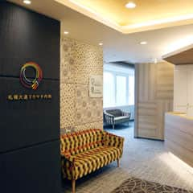 エントランス - エレベーターで5階へ上がっていただくとそのままエントランスになっております。
-
-
-
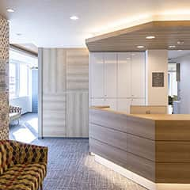 受付 - 受付にてご案内いたします。コンシェルジュにお声がけください。
-
-
-
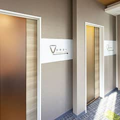 通路 - 個室の診察室が7つ並んでおりますので、指定の個室にお入りください。
-
-
-
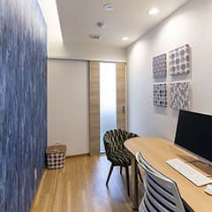 診察室 - 虹の7色それそれに彩られた個室での診察となります。
-
-
-
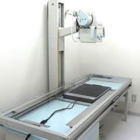 レントゲン - レントゲン設備を備えております。
-
-
-
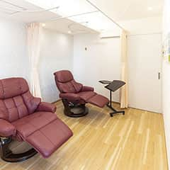 点滴室 - 点滴室にはリラックスできるリクライニングチェアをご用意しております。
-
-
-
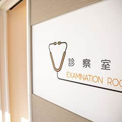 院内サイン(アイコン) - 院内にはわかりやすく案内の表示がございます。
-
診察室マップClinic Map
当院は虹の7色をコンセプトに、7つの診察室それぞれにイメージカラーが使われています。

-
Room
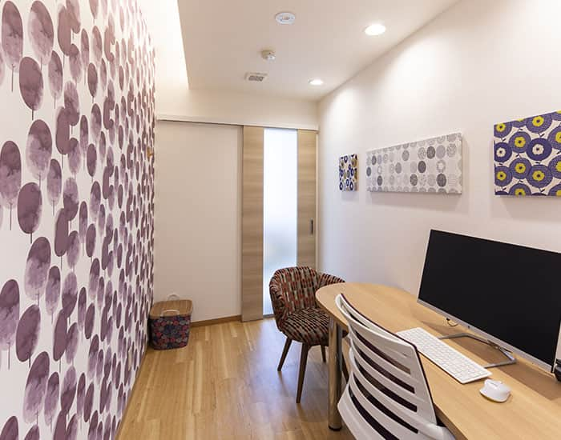 -
Room
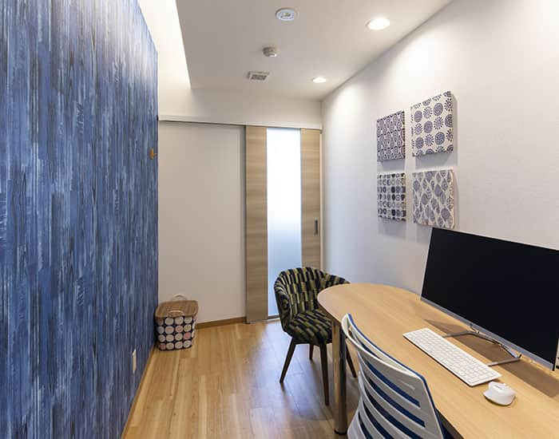 -
Room
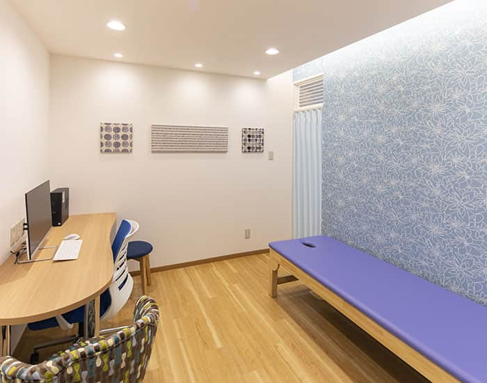 -
Room
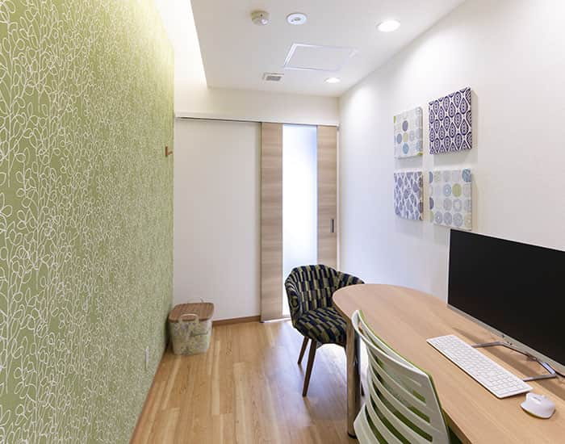 -
Room
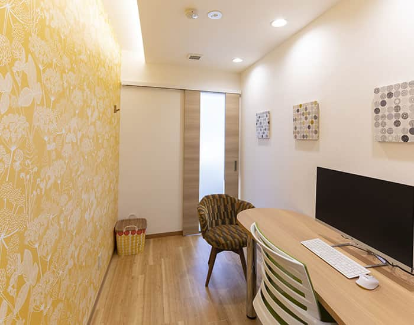 -
Room
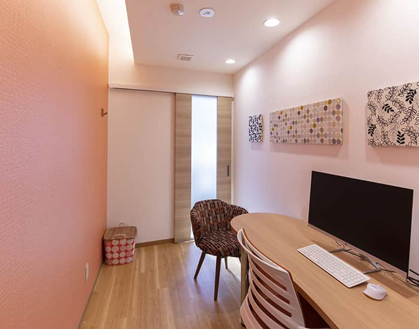 -
Room
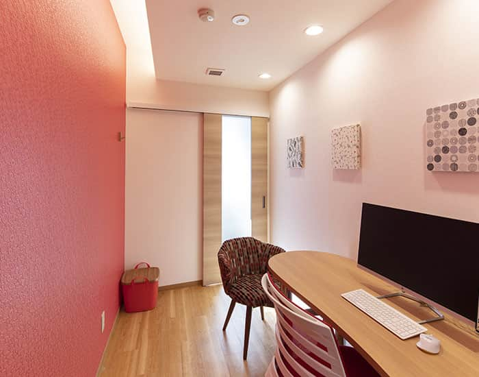
アクセスAccess
札幌大通リウマチ内科は南一条通の札幌三越横、マツモトキヨシのビル5階にございます。場所が分からない時はお気軽にお電話ください。
- 地下鉄
- 南北線・東西線・東豊線 大通駅 17番出口 徒歩1分
東豊線からは大通駅 33番出口も便利です。徒歩2分 - お車
-
駐車無料券(カモンチケット1時間分)を差し上げます。チケットが使える近隣駐車場をご利用下さい。大通公園の地下街と直結する、札幌大通地下駐車場（自走式366台、車いす対応、身障者対応エレベーター）が便利です。
このマークの付いた駐車場をご利用ください。
↑詳しくはカモンチケットのマークをクリック
ご予約Reservation
リウマチ科
- 初診の方
-
初診の方へ
初診の方は、丁寧に状況を聞いたり、検査の計画、治療のご提案などの説明にお時間がかかります。お時間に余裕をもってお越し下さい。
-
現在当院では、再診のご予約をお電話にて承っております。
011-280-7777
ご希望の方は、以下までお電話ください。月～金曜日 / 9:00-13:00 14:00-17:00
土日・祝祭日 / 休診